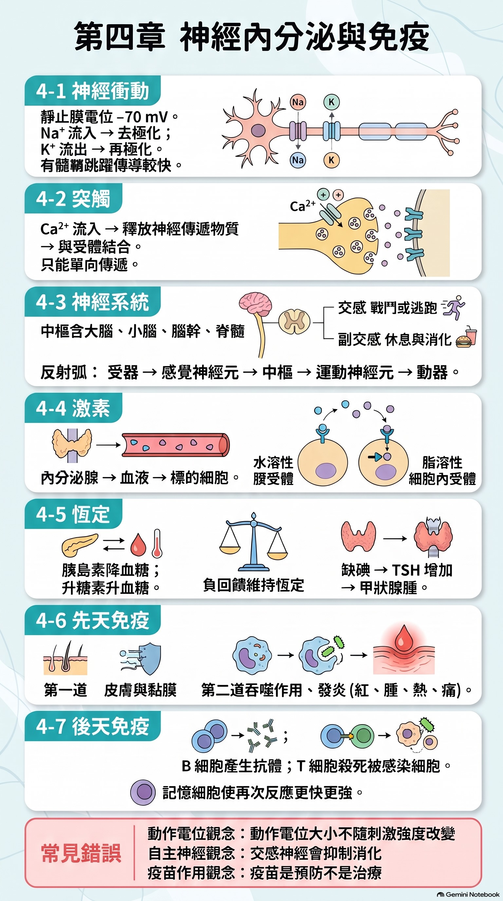

4-1
神經元與神經衝動
- 靜止膜電位約 −70 mV（鈉鉀幫浦＋K⁺ 漏通道）；達閾值 −55 mV 時 Na⁺ 流入去極化到 +30 mV，再由 K⁺ 流出再極化
- 動作電位遵守全有全無律，刺激強弱以「頻率」編碼；有髓鞘纖維以跳躍傳導，可達 100～120 m／s
4資訊圖表重點
點一下放大全圖
2互動視覺化：動作電位實驗室與傳導競賽
動畫已放慢：有髓鞘的衝動在蘭氏結之間「跳」；無髓鞘的衝動一段一段連續前進。時間以實際數值計算（例題 4-1-5）。
1NotebookLM 簡報
3隨堂評量
4-2
突觸與神經傳遞物質
- 動作電位到末梢 → Ca²⁺ 流入 → 胞吐釋放傳遞物質 → 與突觸後膜受體結合 → 離子通道打開；之後被分解或回收
- 突觸只能單向傳遞；興奮性突觸使膜去極化、抑制性突觸使膜過極化，神經元把兩者加總後才決定是否產生動作電位
4資訊圖表重點
點一下放大全圖
2互動視覺化：突觸的毒素與藥物、突觸整合
例題 4-2-4 的簡化模型：每次突觸後電位約 5 ms 內消退；短時間內的電位會加總，加總後達到閾值 −55 mV 才產生動作電位。
1NotebookLM 簡報
3隨堂評量
4-3
人體的神經系統與反射
- 中樞：大腦（高等功能）、小腦（平衡協調）、間腦（視丘、下視丘）、腦幹（延腦管呼吸心跳）、脊髓；周邊：腦神經 12 對、脊神經 31 對
- 交感神經「戰鬥或逃跑」、副交感神經「休息與消化」，相互拮抗；反射弧：受器 → 感覺神經元 →（中間神經元）→ 運動神經元 → 動器
4資訊圖表重點
點一下放大全圖
2互動視覺化：自主神經、反射弧、尺落實驗
點圖上的任一段構造可以把它「剪斷」或接回，看看反射與感覺是否還在。
由電腦隨機放開直尺，看到直尺開始下落就立刻按「接住」。直尺落下距離 d = ½gt²（g = 9.8 m／s²），本工具用你的反應時間換算距離。
1NotebookLM 簡報
3隨堂評量
4-4
內分泌系統與激素的作用
- 內分泌腺沒有導管，激素經血液送到全身，只作用於有受體的標的細胞；激素是訊息分子，不是酶、也不提供能量
- 水溶性激素（蛋白質、肽類、多數胺類）用膜受體與第二傳訊者；脂溶性激素（類固醇、甲狀腺素）用細胞內受體調控基因
4資訊圖表重點
點一下放大全圖
2互動視覺化：激素如何作用在標的細胞
1NotebookLM 簡報
3隨堂評量
4-5
激素的調節與恆定
- 負回饋維持恆定（甲狀腺素抑制 TRH、TSH）；正回饋加速完成（分娩的催產素）；缺碘時 TSH 偏高、甲狀腺腫大
- 胰島素（唯一降血糖）與升糖素拮抗；第一型糖尿病是自體免疫破壞 β 細胞，第二型是胰島素阻抗
4資訊圖表重點
點一下放大全圖
2互動視覺化：葡萄糖耐受測驗與甲狀腺回饋
示意曲線：第 0 分鐘喝下含 75 g 葡萄糖的溶液（例題 4-5-2）。紅色虛線為腎糖閾 180 mg／dL。
1NotebookLM 簡報
3隨堂評量
4-6
先天免疫（非專一性防禦）
- 第一道防線：皮膚、黏膜與纖毛、溶菌酶、胃酸；第二道防線：吞噬細胞、發炎反應、發燒、自然殺手細胞、干擾素、補體
- 發炎：組織胺使微血管擴張（紅、熱）、通透性增加（腫）、刺激神經（痛）；嗜中性球吞噬細菌後死亡形成膿
4資訊圖表重點
點一下放大全圖
2互動視覺化：木刺扎傷後的發炎反應
示意模型（數量以相對值表示）：細菌由傷口進入組織；嗜中性球先到、巨噬細胞較晚到。
1NotebookLM 簡報
3隨堂評量
4-7
後天免疫與免疫失調
- 輔助 T 細胞指揮：B 細胞 → 漿細胞分泌抗體（體液免疫）；胞毒 T 細胞殺死被感染的細胞（細胞免疫）；兩者都留下記憶細胞
- 再次反應快、強、久（疫苗原理）；主動免疫可預防、被動免疫立即但短暫；過敏、自體免疫、AIDS 是免疫失調
4資訊圖表重點
點一下放大全圖
2互動視覺化：抗體濃度模擬器
示意模型：縱軸為抗體濃度（相對值，初次反應高峰記為 1）。先選事件時間，再按事件按鈕。
1NotebookLM 簡報
3隨堂評量
🧠
本章心智圖
- NotebookLM 產生的概念架構（中文版）：點小標題可展開或收合
- 上課可先全部收合，請學生猜每個分支下面有什麼，再逐一打開
🃏
學習卡
- 點卡片（或按空白鍵）翻面看答案；← → 切換上一張、下一張
- 標記「我會了／再複習」，可以只練還不熟的卡片；標記只存在這台電腦的瀏覽器
★
總複習
- 本章重點總整理、形成性評量 10 題（附答案）、完整資訊圖表與教學影片
1NotebookLM 簡報：重點總整理與形成性評量
▶NotebookLM 教學影片
4完整資訊圖表

點一下放大